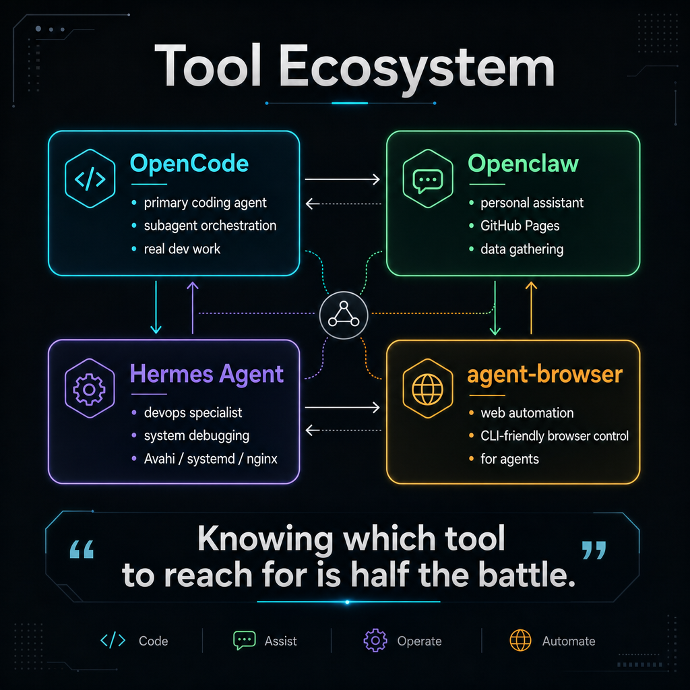
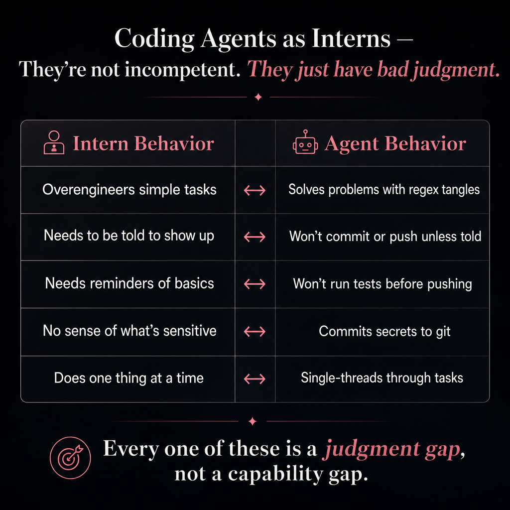
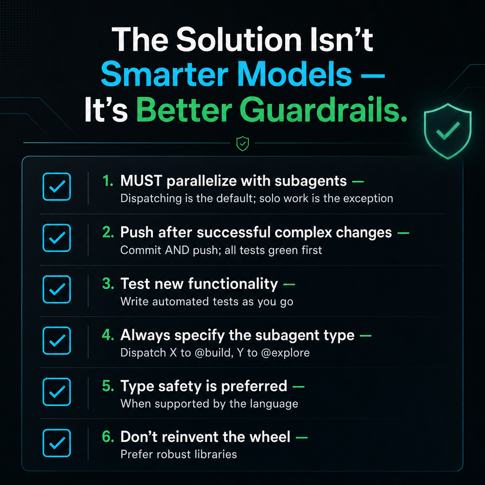
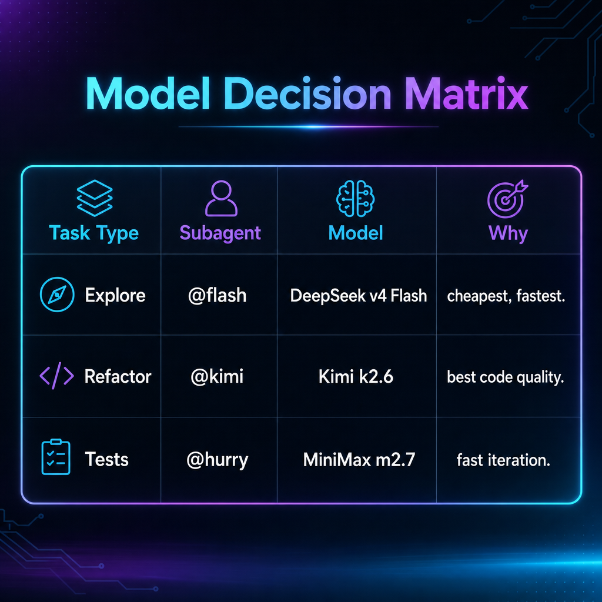

<!doctype html>
<html lang="en">
<head>
<meta charset="utf-8" />
<meta name="viewport" content="width=device-width,initial-scale=1" />
<title>Writing Code Like an Architect — CDMX May 28, 2026</title>
<style>
  :root { color-scheme: dark; }
  *, *::before, *::after { box-sizing: border-box; margin: 0; padding: 0; }
  html, body { width: 100%; height: 100%; overflow: hidden; background: #0a0c14; font-family: "Iowan Old Style", Georgia, "Times New Roman", serif; }
  #deck { position: relative; width: 100vw; height: 100vh; }
  .slide { position: absolute; inset: 0; display: flex; flex-direction: column; align-items: center; justify-content: center; opacity: 0; pointer-events: none; transition: opacity .5s ease; padding: 6vh 8vw; }
  .slide.active { opacity: 1; pointer-events: auto; z-index: 1; }
  .slide h1 { font-size: clamp(2.5rem, 6vw, 5rem); font-weight: 400; color: #f0e6d3; text-align: center; letter-spacing: -.02em; line-height: 1.15; margin-bottom: .3em; }
  .slide h2 { font-size: clamp(1.5rem, 3.5vw, 2.4rem); font-weight: 400; color: #d4a85c; margin-bottom: 1.2em; text-align: center; }
  .slide h3 { font-size: 1.3rem; color: #e8c97a; margin-bottom: .6em; }
  .slide p, .slide li { font-size: clamp(1rem, 2vw, 1.35rem); color: #c8c0b8; line-height: 1.6; max-width: 860px; }
  .slide ul, .slide ol { margin: .5em 0; padding-left: 1.4em; }
  .slide li { margin-bottom: .35em; }
  table { border-collapse: collapse; width: 100%; max-width: 900px; margin: 1em auto; font-size: clamp(.8rem, 1.5vw, 1.1rem); }
  th, td { padding: .6em 1em; border-bottom: 1px solid rgba(212,168,92,.2); text-align: left; color: #c8c0b8; }
  th { color: #d4a85c; font-weight: 400; text-transform: uppercase; font-size: .8em; letter-spacing: .05em; }
  .subtitle { font-size: clamp(1rem, 2vw, 1.5rem); color: #8a8070; margin-bottom: 2em; text-align: center; }
  .counter { position: fixed; bottom: 2vh; right: 3vw; color: #4a4440; font-size: .85rem; z-index: 10; font-family: "JetBrains Mono", monospace; }
  .tagline { font-size: clamp(.9rem, 1.5vw, 1.1rem); color: #6a6050; text-align: center; font-style: italic; margin-top: 1em; }
  .notes { position: fixed; bottom: 0; left: 0; right: 0; background: rgba(10,12,20,.95); border-top: 1px solid rgba(212,168,92,.15); padding: 1rem 2rem; color: #8a8070; font-size: .85rem; z-index: 5; display: none; max-height: 30vh; overflow-y: auto; font-style: italic; }
  .notes.visible { display: block; }
  canvas#pretext { position: absolute; inset: 0; z-index: 0; pointer-events: none; }
  .pretext-slide { position: relative; }
  .pretext-slide .slide-content { position: relative; z-index: 1; }
  .highlight { color: #e8c97a; }
  .muted { color: #6a6050; font-size: .85em; }
  .emoji-bullet { list-style: none; padding-left: 0; }
  .emoji-bullet li::before { content: "▸ "; color: #d4a85c; }
  .grid-2 { display: grid; grid-template-columns: 1fr 1fr; gap: 2rem; max-width: 900px; margin: 0 auto; }
  .card { background: rgba(255,255,255,.03); border: 1px solid rgba(212,168,92,.1); border-radius: 8px; padding: 1.2rem; }
  .card h3 { margin-top: 0; }
</style>
</head>
<body>
<div id="deck"></div>
<div class="counter" id="counter"></div>
<div class="notes" id="notes"></div>
<script type="module">
  import { prepareWithSegments, layoutNextLineRange, materializeLineRange, layoutWithLines } from "https://esm.sh/@chenglou/pretext@0.0.6";

  const slides = [];
  let current = 0;
  const deck = document.getElementById("deck");
  const counterEl = document.getElementById("counter");
  const notesEl = document.getElementById("notes");
  let notesVisible = false;

  function addSlide(html, notes, id, pretextEffect) {
    const el = document.createElement("div");
    el.className = "slide";
    if (id) el.id = id;
    el.innerHTML = html;
    deck.appendChild(el);
    slides.push({ el, notes: notes || "", pretextEffect });
  }

  function showSlide(i) {
    slides[current].el.classList.remove("active");
    current = ((i % slides.length) + slides.length) % slides.length;
    slides[current].el.classList.add("active");
    counterEl.textContent = `${current + 1} / ${slides.length}`;
    if (notesVisible) notesEl.textContent = slides[current].notes || "(no speaker notes)";
  }

  function next() { showSlide(current + 1); }
  function prev() { showSlide(current - 1); }

  // ============ SLIDE 0: TITLE (pretext kinetic) ============
  addSlide(`
    <canvas id="pretext"></canvas>
    <div class="slide-content" style="text-align:center">
      <h1>Writing Code<br>Like an Architect</h1>
      <div class="subtitle">A Personal Experiment in Vibe Coding</div>
      <div class="tagline">CDMX · May 28, 2026</div>
    </div>
  `, "SPEAKER NOTES §1: Opening hook — 60 seconds. \"You don't lay every brick. You design the system, set the guardrails, and let the interns do the work.\"", "slide-0", true),

  // ============ SLIDE 1: Three Questions ============
  addSlide(`
    <h2>The Three Questions</h2>
    <ol style="font-size: clamp(1rem, 2vw, 1.35rem); max-width: 800px">
      <li><span class="highlight">Open-weights models</span> — how far can they go with real autonomy?</li>
      <li><span class="highlight">Default prompts</span> — what breaks without Claude's behavioral guardrails?</li>
      <li><span class="highlight">Embeddings</span> — how can I use them to navigate my own data?</li>
    </ol>
  `, "SPEAKER NOTES §2: Expand on each question — 3 min."),

  // ============ SLIDE 2: Token Economics ============
  addSlide(`
    <h2>Token Economics</h2>
    <table>
      <tr><th>Service</th><th>Cost</th><th>What You Get</th></tr>
      <tr><td>Ollama Pro</td><td>$20/mo</td><td>Nearly inexhaustible tokens, DeepSeek v4, Qwen 3</td></tr>
      <tr><td>OpenCode Go</td><td>$10/mo</td><td>Agent runtime, subagent orchestration</td></tr>
      <tr><td>OpenRouter</td><td>~$0.01</td><td>Embed ~1600 documents</td></tr>
      <tr style="color:#e8c97a"><td><strong>Total</strong></td><td><strong>~$30/mo</strong></td><td><strong>A coding agent that runs all day</strong></td></tr>
    </table>
    <p class="tagline">"Embedding 1600 documents cost one cent."</p>
  `, "SPEAKER NOTES §3: Cost narrative — 3 min."),

  // ============ SLIDE 3: Tool Ecosystem ============
  addSlide(`
    <h2>Tool Ecosystem</h2>
    
    <p class="tagline">Knowing which tool to reach for is half the battle.</p>
  `, "SPEAKER NOTES §4: Tool walkthrough — 4 min."),

  // ============ SLIDE 4: Managing Interns (PRETEXT reflow) ============
  addSlide(`
    <canvas id="pretext-interns" style="position:absolute;inset:0;z-index:0;pointer-events:none"></canvas>
    <div class="slide-content pretext-slide" style="z-index:1;text-align:center">
      <h2>Managing Interns</h2>
      <ul class="emoji-bullet" style="max-width:700px;margin:0 auto">
        <li>Give them <span class="highlight">room to surprise you</span><br><span class="muted">— they picked a ridiculous team name and made fun of me</span></li>
        <li>They'll <span class="highlight">overengineer</span><br><span class="muted">— stored SQL procedure for a simple Rails controller</span></li>
        <li>They need <span class="highlight">obvious limits</span><br><span class="muted">— gym clothes in the office, skipped meetings</span></li>
      </ul>
      <p class="tagline">"These aren't competence problems. They're judgment problems."</p>
    </div>
  `, "SPEAKER NOTES §5: Intern story — 3 min.", null, true),

  // ============ SLIDE 5: Coding Agents as Interns ============
  addSlide(`
    <h2>Coding Agents as Interns</h2>
    
    <p class="tagline">Every one of these is a judgment gap, not a capability gap.</p>
  `, "SPEAKER NOTES §6: Agent parallels — 3 min."),

  // ============ SLIDE 6: Guardrails ============
  addSlide(`
    <h2>The Solution Isn't Smarter Models —<br>It's Better Guardrails</h2>
    
    <p class="tagline">Explore → @flash · Refactor → @kimi · Tests → @hurry</p>
  `, "SPEAKER NOTES §7: Guardrails + decision matrix — 3 min."),

  // ============ SLIDE 7: Mnestic Architecture ============
  addSlide(`
    <h2>Mnestic Architecture</h2>
    
    <a href="mnestic-architecture.html" target="_blank" style="color:#d4a85c;font-size:.9rem;text-decoration:none;border:1px solid rgba(212,168,92,.3);padding:.4em 1em;border-radius:4px;display:inline-block;margin-top:.5em">Open Architecture Diagram ↗</a>
  `, "SPEAKER NOTES §8: Architecture — 3 min."),

  // ============ SLIDE 8: Embeddings Explained ============
  addSlide(`
    <h2>Embeddings Explained</h2>
    <div style="display:flex;gap:1rem;justify-content:center;flex-wrap:wrap;margin-bottom:1rem">
      <a href="embedding-viz.html" target="_blank" style="color:#d4a85c;font-size:.9rem;text-decoration:none;border:1px solid rgba(212,168,92,.3);padding:.5em 1.2em;border-radius:4px;display:inline-block">3D Word Relationships ↗</a>
      <a href="word_vectors_3d.html" target="_blank" style="color:#d4a85c;font-size:.9rem;text-decoration:none;border:1px solid rgba(212,168,92,.3);padding:.5em 1.2em;border-radius:4px;display:inline-block">PCA / t-SNE / UMAP Projections ↗</a>
    </div>
    <p style="text-align:center;font-size:1.2rem;margin-bottom:1em">"uncle" is to "aunt" as "man" is to "woman"</p>
    <div style="text-align:center;color:#d4a85c;font-size:1.1rem;margin-bottom:1.5em">uncle → aunt &nbsp;∥&nbsp; man → woman</div>
    <p style="text-align:center">Sad is close to <span class="highlight">unhappy</span> even though they share no letters.</p>
    <p class="tagline">You're matching meaning, not keywords.</p>
  `, "SPEAKER NOTES §9: Embeddings — 3 min."),

  // ============ SLIDE 9: Mnestic Demo ============
  addSlide(`
    <h2>Mnestic Demo</h2>
    <ul style="max-width:700px;margin-top:1em">
      <li>Note similarity cloud in the Mnestic web UI</li>
      <li>Agent querying via <span class="highlight">MCP</span> (mcp_mnestic_* tools)</li>
      <li>Zoom transcript → Claude → Mnestic pipeline</li>
      <li>Cross-session memory: "Did Alan send that email?"</li>
    </ul>
  `, "SPEAKER NOTES §10: Demo narration — 4 min."),

  // ============ SLIDE 10: Closing ============
  addSlide(`
    <h2>Closing</h2>
    <ol style="font-size:clamp(.9rem,1.8vw,1.2rem);max-width:800px">
      <li><span class="highlight">$20/month</span> gets you a shocking number of tokens</li>
      <li><span class="highlight">Open-weights models are competitive</span> — GLM 5.1, Kimi k2.6, DeepSeek v4</li>
      <li><span class="highlight">Plan-then-execute works at scale</span> — large model plans, smaller models execute</li>
      <li><span class="highlight">Guardrails matter more than model intelligence</span> — clear mandates, not suggestions</li>
      <li><span class="highlight">I built something I wouldn't have bothered to write by hand</span> — Mnestic</li>
    </ol>
    <p class="tagline" style="margin-top:2em;font-size:1.1rem;color:#d4a85c">"You don't lay every brick. You design the system,<br>you set the guardrails, and you let the interns do the work."</p>
  `, "SPEAKER NOTES §11: Closing + Q&A — 2 min.");

  // ============ PRETEXT: Title slide kinetic effect ============
  let titleAnimFrame;
  function startTitlePretext() {
    const canvas = slides[0].el.querySelector("canvas#pretext");
    if (!canvas || titleAnimFrame) return;
    const ctx = canvas.getContext("2d");
    const TEXT = "Writing Code Like an Architect — A Personal Experiment in Vibe Coding — CDMX — May 28, 2026 — ".repeat(8);
    const FONT = '22px/1.5 "Iowan Old Style", Georgia, serif';
    const LINE_H = 30;
    let W, H, DPR;
    function resize() {
      DPR = Math.min(devicePixelRatio || 1, 2);
      W = canvas.parentElement.offsetWidth;
      H = canvas.parentElement.offsetHeight;
      canvas.width = W * DPR; canvas.height = H * DPR;
      canvas.style.width = W + "px"; canvas.style.height = H + "px";
      ctx.setTransform(DPR, 0, 0, DPR, 0, 0);
    }
    resize(); addEventListener("resize", resize);
    const prepared = prepareWithSegments(TEXT, FONT);
    const orb = { x: W * .45, y: H * .55, r: 160 };
    function frame(t) {
      if (!slides[0].el.classList.contains("active")) { titleAnimFrame = requestAnimationFrame(frame); return; }
      orb.x = W * .45 + Math.sin(t * .0004) * 60;
      orb.y = H * .55 + Math.cos(t * .0007) * 40;
      ctx.fillStyle = "#0a0c14"; ctx.fillRect(0, 0, W, H);
      const g = ctx.createRadialGradient(orb.x, orb.y, 0, orb.x, orb.y, orb.r);
      g.addColorStop(0, "rgba(212,168,92,0.28)");
      g.addColorStop(.5, "rgba(168,120,60,.10)");
      g.addColorStop(1, "rgba(0,0,0,0)");
      ctx.fillStyle = g; ctx.fillRect(0, 0, W, H);
      const COL_X = 60, COL_W = W - 120;
      let cursor = { segmentIndex: 0, graphemeIndex: 0 };
      let y = 68;
      ctx.fillStyle = "rgba(200,192,184,.55)";
      ctx.font = FONT; ctx.textBaseline = "alphabetic";
      while (y < H - 40) {
        const dy = y - orb.y, bandY = Math.abs(dy) < orb.r;
        let x = COL_X, lineMaxW = COL_W;
        if (bandY) {
          const half = Math.sqrt(orb.r * orb.r - dy * dy);
          const orbL = orb.x - half, orbR = orb.x + half;
          const lw = Math.max(0, orbL - COL_X), rw = Math.max(0, COL_X + COL_W - orbR);
          if (lw >= rw) { x = COL_X; lineMaxW = lw - 18; }
          else { x = orbR + 18; lineMaxW = rw - 18; }
          if (lineMaxW < 50) { y += LINE_H; continue; }
        }
        const range = layoutNextLineRange(prepared, cursor, lineMaxW);
        if (!range) break;
        const line = materializeLineRange(prepared, range);
        ctx.fillText(line.text, x, y);
        cursor = range.end; y += LINE_H;
      }
      titleAnimFrame = requestAnimationFrame(frame);
    }
    titleAnimFrame = requestAnimationFrame(frame);
  }

  // ============ PRETEXT: Interns slide reflow effect ============
  let internsAnimFrame;
  function startInternsPretext() {
    const slide = slides[4];
    const canvas = slide.el.querySelector("canvas#pretext-interns");
    if (!canvas || internsAnimFrame) return;
    const ctx = canvas.getContext("2d");
    const TEXT = "You don't lay every brick. You design the system. You set the guardrails. And you let the interns do the work. ".repeat(12);
    const FONT = '13px/1.4 "Iowan Old Style", Georgia, serif';
    const LINE_H = 20;
    let W, H, DPR;
    function resize() {
      DPR = Math.min(devicePixelRatio || 1, 2);
      W = canvas.parentElement.offsetWidth;
      H = canvas.parentElement.offsetHeight;
      canvas.width = W * DPR; canvas.height = H * DPR;
      canvas.style.width = W + "px"; canvas.style.height = H + "px";
      ctx.setTransform(DPR, 0, 0, DPR, 0, 0);
    }
    resize(); addEventListener("resize", resize);
    const prepared = prepareWithSegments(TEXT, FONT);
    function frame(t) {
      if (!slides[4].el.classList.contains("active")) { internsAnimFrame = requestAnimationFrame(frame); return; }
      const orb = { x: W * .35, y: H * .55, r: 100 };
      orb.x += Math.sin(t * .0005) * 40;
      orb.y += Math.cos(t * .0006) * 30;
      ctx.fillStyle = "rgba(10,12,20,.92)";
      ctx.fillRect(0, 0, W, H);
      const g = ctx.createRadialGradient(orb.x, orb.y, 0, orb.x, orb.y, orb.r);
      g.addColorStop(0, "rgba(212,168,92,.18)");
      g.addColorStop(.6, "rgba(100,80,50,.06)");
      g.addColorStop(1, "rgba(0,0,0,0)");
      ctx.fillStyle = g; ctx.fillRect(0, 0, W, H);
      const COL_X = 30, COL_W = W - 60;
      let cursor = { segmentIndex: 0, graphemeIndex: 0 };
      let y = 20;
      ctx.fillStyle = "rgba(160,152,140,.40)";
      ctx.font = FONT; ctx.textBaseline = "alphabetic";
      while (y < H - 10) {
        const dy = y - orb.y, bandY = Math.abs(dy) < orb.r;
        let x = COL_X, lineMaxW = COL_W;
        if (bandY) {
          const half = Math.sqrt(orb.r * orb.r - dy * dy);
          const orbL = orb.x - half, orbR = orb.x + half;
          const lw = Math.max(0, orbL - COL_X), rw = Math.max(0, COL_X + COL_W - orbR);
          if (lw >= rw) { x = COL_X; lineMaxW = lw - 12; }
          else { x = orbR + 12; lineMaxW = rw - 12; }
          if (lineMaxW < 30) { y += LINE_H; continue; }
        }
        const range = layoutNextLineRange(prepared, cursor, lineMaxW);
        if (!range) break;
        const line = materializeLineRange(prepared, range);
        ctx.fillText(line.text, x, y);
        cursor = range.end; y += LINE_H;
      }
      internsAnimFrame = requestAnimationFrame(frame);
    }
    internsAnimFrame = requestAnimationFrame(frame);
  }

  // ============ NAVIGATION ============
  addEventListener("keydown", e => {
    if (e.key === "ArrowRight" || e.key === "ArrowDown" || e.key === " ") { e.preventDefault(); next(); }
    if (e.key === "ArrowLeft" || e.key === "ArrowUp") { e.preventDefault(); prev(); }
    if (e.key === "s" || e.key === "S") {
      e.preventDefault();
      notesVisible = !notesVisible;
      notesEl.classList.toggle("visible", notesVisible);
      if (notesVisible) notesEl.textContent = slides[current].notes || "(no speaker notes)";
    }
  });

  addEventListener("click", e => {
    if (e.clientX > innerWidth * .5) next();
    else prev();
  });

  addEventListener("touchstart", e => {
    const tx = e.touches[0].clientX;
    if (tx > innerWidth * .5) next();
    else prev();
  });

  // ============ INIT ============
  showSlide(0);
  startTitlePretext();
  startInternsPretext();
</script>
</body>
</html>